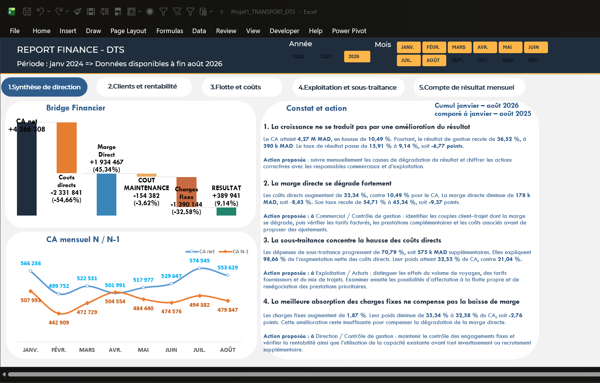

MATRANORD TRANSPORT
Chargé Comptabilité & FacturationComptabilité, suivi du CA et des charges, contrôle de la sous-traitance et automatisation des reportings.
Contrôleur de gestion junior
Comprendre les coûts, fiabiliser le reporting et relier les données opérationnelles à la performance financière.
Me contacter →LinkedIn ↗Finance, contrôle de gestion
& analyse de données
01 / À PROPOS
Mon parcours en comptabilité et facturation m’a amené à travailler sur la fiabilité des données, le suivi des opérations et l’automatisation du reporting.
Je développe aujourd’hui ma spécialisation en contrôle de gestion industriel : comprendre les écarts, analyser les marges et éclairer les décisions avec une lecture terrain.
FORMATION
ENCG Tanger · 2020–2022
FORMATIONS COMPLÉMENTAIRES
PK Consulting · 2025
Contrôle de gestion Junior & Senior.
SAP Finance & Controlling. · 2025
Comptabilité, suivi du CA et des charges, contrôle de la sous-traitance et automatisation des reportings.
Contrôle des POD, rapprochement du chiffre d’affaires, reporting mensuel et analyse des écarts.
Tenue et contrôle des comptes, déclarations fiscales et participation aux travaux de clôture.
02 / COMPÉTENCES
Coûts de revient, marges, budgets, prévisions et analyse des écarts.
Structurer, rapprocher et transformer les données en indicateurs exploitables.
Construire des reportings lisibles et fiabiliser les traitements récurrents.
Comptabilité, clôture, trésorerie, facturation et contrôle des comptes.
03 / PROJETS
Le projet Transport présente la démarche complète, des données brutes aux recommandations. Les deux autres projets sont en préparation.

ÉTUDE DE CAS DISPONIBLE
J’ai fiabilisé les exports, construit le modèle et les mesures, rapproché les chiffres, puis proposé des actions de gestion.
CA +10,5 % · Résultat −36,5 %
Cas simulé · Janvier–août 2026 vs 2025
PROJET À VENIR
Comprendre ce qui fait varier le coût de production et la marge.
PROJET À VENIR
Comprendre les écarts entre budget, réalisé et prévisions.
Données → KPI → Écarts → Causes → Impact financier → Actions
04 / PUBLICATIONS
Coût de revient, matières premières, MOD, Process Cost, Tooling, Packaging, budget, budget des ventes et CAPEX : les sujets que j’explore et partage sur LinkedIn.
Lire mes publications ↗Retrouvez mes expériences, formations et compétences dans mon CV. Document original en français.
PDF · ouverture dans un nouvel onglet
05 / CONTACT
Une opportunité en contrôle de gestion ou un échange sur mes projets ? Prenons contact.
Disponible immédiatement / Basé à Tanger, Maroc.